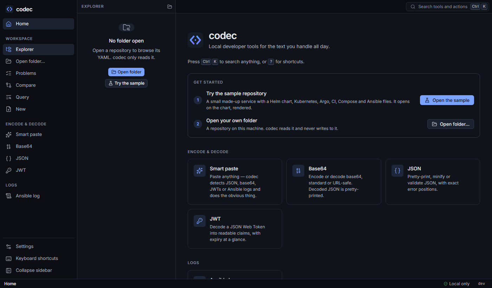

Getting started
codec is a single binary. There is nothing to install and no admin rights are needed: download, run, open your browser.
Download#
Get the archive for your platform from GitHub Releases. Builds exist for Windows, macOS and Linux, each for amd64 and arm64. Unpack it anywhere, for example a bin folder on your PATH.
| Platform | Archive | First run |
|---|---|---|
| Windows | codec_<version>_windows_amd64.zip | The binary isn't code-signed, so SmartScreen may say "Windows protected your PC". Choose More info → Run anyway, or unblock it once: Unblock-File .\codec.exe. |
| macOS | codec_<version>_darwin_arm64.tar.gz | Gatekeeper blocks unsigned downloads. Remove the quarantine flag once: xattr -d com.apple.quarantine codec. |
| Linux | codec_<version>_linux_amd64.tar.gz | Nothing special: chmod +x codec if your unpacker lost the bit. |
Check what you have with codec version.
First run: the sample repository#
codec serve --open --sampleThis starts the local server on http://localhost:8765, opens your browser, and opens a small made-up repository built into codec, landing on its rendered Helm chart. The sample has one of everything: a Helm chart with dev and prod values, Kubernetes manifests with a Kustomize overlay, Argo workflows, GitHub Actions, GitLab CI and Azure pipelines, a Compose project and an Ansible playbook with a role. A few problems are planted in k8s/legacy/ for the lint view to find.
The sample is written to codec's cache folder, never to where you work, and restored each time you open it.

--sample, the first run offers the same choice on the home screen.Open your own repository#
codec serve --open --root ~/repos/platformOr start plain codec serve and press Ctrl O: paste a path, pick a recent folder, or browse (drives are listed on Windows; folders that are Git repositories are marked). codec reads the folder, honours .gitignore, labels every YAML file by type and starts watching for changes.
Server options#
| Flag | Default | Meaning |
|---|---|---|
--port | 8765 | Port to listen on. If it is taken, codec says so and suggests the next one. |
--root | Folder to open at start. | |
--sample | Open the built-in sample repository instead. | |
--open | Open the UI in your default browser. | |
--poll | Detect file changes by polling instead of native file events (automatic in containers). | |
--host | 127.0.0.1 | Address to bind. Only change it inside a container (0.0.0.0). |
Docker#
docker run --rm -p 127.0.0.1:8765:8765 -v "$PWD:/work:ro" ghcr.io/mahasenabheetha/codecThen open http://localhost:8765. The repository is mounted read-only at /work; file changes are picked up by polling, since native events don't cross bind mounts from Windows or macOS.
- In PowerShell use
-v "${PWD}:/work:ro". - Keep
127.0.0.1:in-pso the port isn't reachable from your network. - Add
-v codec-home:/home/nonrootto keep Helm profiles, recent folders and downloaded schemas between runs. - Pin a version with
ghcr.io/mahasenabheetha/codec:2.0.0.latestis the newest stable release; pre-releases only get their version tag. - The image is distroless and runs as a non-root user; it is published for linux/amd64 and linux/arm64.
Build from source#
You need Go 1.26+ and Node.js 22+.
git clone https://github.com/mahasenabheetha/codec.git
cd codec
npm --prefix frontend ci
npm --prefix frontend run build # the web UI, embedded into the binary
go build -o codec ./cmd/codecSee Development for the dev server and the contributor workflow.
Use it with VS Code or Cursor#
Every file view has an Open in VS Code button (or Cursor — choose in Settings) that opens the same file at the cursor's line. Problem lists and "defined in" links jump the same way. A typical loop: read and experiment in codec, make the real change in your editor, and codec's tabs refresh as soon as you save.
Install as an app#
For its own window and taskbar icon: in Edge, menu → Apps → Install this site as an app; in Chrome, the install icon in the address bar. codec serve must be running when you open it.
Next steps#
- Learn the workspace and editor, which every other view builds on.
- Keep the keyboard shortcuts handy: Ctrl K finds any action.
- Run
codec yaml lintin CI: see the CLI reference.